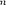
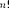
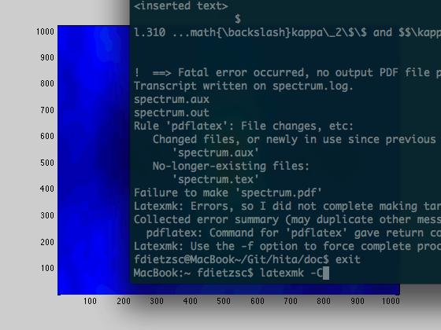
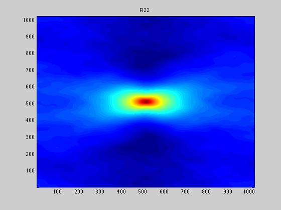

DOCUMENT TITLE
INTRODUCTORY TEXT
Contents
Clear complete workspace
Its always a good idea to clear the complete workspace and the command window also closing all figures might be helpful. You may also use the header defin some neccessary flags distinguishing bewteen different data sets.
close all clear all clc flag='2D'; datadir='data';
Read data files
Read in the data files and measure the time for reading. The output of the tic/toc block is in seconds. What you should get from the tic/toc block is that most of the time is spend during data I/O. The actual computation needs only ??? of the time of the I/O operations.
3D
if (strcmp('3D',flag)) tic; % enable timer uvel=importdata([datadir,'/',flag,'/uvel']); vvel=importdata([datadir,'/',flag,'/vvel']); wvel=importdata([datadir,'/',flag,'/wvel']); time_reading = toc; % end timer end %%% 2D if (strcmp('2D',flag)) tic; uvel=importdata([datadir,'/',flag,'/uvel']); vvel=importdata([datadir,'/',flag,'/vvel']); time_reading = toc; end
Set some neccessary parameters
For further computations it is important to define some parmeters of the DNS simulation such as domain size, grid spacing, and the number of grid points.
3D
if (strcmp('3D',flag)) dim=256; % number of points in one dimension Lx=5e-3; % domain size Ly=Lx; Lz=Lx; dx=Lx/dim; % grid spacing dy=dx; dz=dx; nu=1.7e-5; % viscosity u=reshape(uvel,dim,dim,dim); % reshape arrays to have them in 3D v=reshape(vvel,dim,dim,dim); w=reshape(wvel,dim,dim,dim); end %%% 2D if (strcmp('2D',flag)) dim=1024; % number of points in one dimension Lx=1E-2; % domain size Ly=Lx; dx=Lx/dim; % grid spacing dy=dx; u=reshape(uvel,dim,dim); % reshape arrays to have them in 2D v=reshape(vvel,dim,dim); end
Compute FFT
This is the most important part of the script. Since the performance of an actual DFT is rather bad the preferred choice is a FFT. The FFT approach is fastest if the data set to be transformed has a size that is a multiple of two. Thats why the function nextpow2 is used to get the next powert of two approximating the dimension dim of the data set. As a consequence the data set is zero padded or truncated. Since the output of an FFT operation is symmetric we only need to save half the transform. latex \begin{tabular}{|c|c|} \hline  &  \\ \hline 1 & 1 \\ 2 & 2 \\ 3 & 6 \\ \hline \end{tabular} /latex
if (strcmp('3D',flag)) tic; NFFT = 2.^nextpow2(size(u)); % Next power of 2 from length of u u_fft=fftn(u,NFFT); % NFFT = 2.^nextpow2(size(v)); v_fft=fftn(v,NFFT); % NFFT = 2.^nextpow2(size(w)); w_fft=fftn(w,NFFT); time_fft=toc; phi_x=u_fft.*conj(u_fft)/dim^6; phi_y=v_fft.*conj(v_fft)/dim^6; phi_z=w_fft.*conj(w_fft)/dim^6; end if (strcmp('2D',flag)) NFFT = 2.^nextpow2(size(u)); u_fft=fft2(u,NFFT(1),NFFT(2))./(2*pi)^2; %2pi comes from the definition of FFT % u_fft = u_fft(1:NFFT(1)/2+1,1:NFFT(2)/2+1); NFFT = 2.^nextpow2(size(v)); v_fft=fft2(v,NFFT(1),NFFT(2))./(2*pi)^2; % v_fft = v_fft(1:NFFT(1)/2+1,1:NFFT(2)/2+1); phi_x=u_fft.*conj(u_fft)/size(u,1).^2/size(u,2).^2; phi_y=v_fft.*conj(v_fft)/size(v,1).^2/size(v,2).^2; end
Compute correlations
Computing a correlation can be a tedious work (requireing tremendous effort) especially if you have large data sets. From theory it is well known that the multiplication of the transform of a data set and ist complex conjugate give a accurate representation of the correlation function. Using the FFT approach this gives an enormeous speed advantage.
if (strcmp('3D',flag)) R11=ifftn(u_fft.*conj(u_fft))/dim^3/std2(u)^2; R22=ifftn(u_fft.*conj(u_fft))/dim^3/std2(v)^2; R33=ifftn(u_fft.*conj(u_fft))/dim^3/std2(w)^2; R11=R11(1:round(size(R11,1)/2),1,1); R22=R22(1:round(size(R22,1)/2),1,1); R33=R33(1:round(size(R33,1)/2),1,1); r = linspace(0,Lx/2,dim/2)/(Lx/2); else NFFT = 2.^nextpow2(size(u_fft)); R1 = ifft2(u_fft.*conj(u_fft),NFFT(1),NFFT(2))... ./NFFT(1)./NFFT(2)./std2(u)^2 ... .*(2*pi)^4; % scaling due to division by 2*pi % NFFT = 2.^nextpow2(size(v_fft)); R2 = ifft2(v_fft.*conj(v_fft),NFFT(1),NFFT(2))... ./NFFT(1)./NFFT(2)./std2(v)^2 ... .*(2*pi)^4; % scaling due to division by 2*pi % R11= ifftn(fftn(u).*conj(fftn(u))/dim^2/std2(u)^2); % R22=ifftn(fftn(v).*conj(fftn(v))/dim^2/std2(v)^2); R11 = (R1(1:round(size(R1,1)/2),1) + ... R2(1,1:round(size(R2,1)/2))')/2; R22 = (R2(1:round(size(R2,1)/2),1) + ... R1(1,1:round(size(R1,1)/2))')/2; % R11 = (R11 + R2(1,1:round(size(R2,1)/2))')/2; % r = linspace(0,Lx/2,dim/2)/(Lx/2); % test = R11 + r'/2.*gradient(R11,max(diff(r))); % plot(r,R11,r,R22,r,test) % legend('R11','R22','Equation'); % h=line([0 1],[0 0],'Color',[0 0 0],'LineWidth',1.0); end
Show graphs
pcolor(fftshift(R1));shading interp;title('R11'); figure pcolor(fftshift(R2));shading interp;title('R22'); 
compute length scales
L11=trapz(r,R11); L22=trapz(r,R22); hold on rectangle('Position',[0,0,L11,1],'LineWidth',2,'LineStyle','--')
Undefined function or variable 'r'. Error in spectrum (line 163) L11=trapz(r,R11);
compute 1D spectrum
L=length(R1); NFFT=2^nextpow2(L); spec_1D=fft(R1(:,1),NFFT)/L.*2/pi; f = linspace(0,1,NFFT)*2*pi/dx; slope=1.5*664092^(2/3)*(f.^(-5/3)); % loglog(f,2*abs(spec_(1:NFFT/2+1))); % hold on % loglog(f,slope);
compute spectrum
spec = zeros(round(dim*dim*dim/8),1);
if (strcmp('3D',flag)) % phi = u_fft; % phi(:,:,:)=0.0; % for k=1:dim % for j=1:dim % for i=1:dim % kappa = sqrt(i*i+j*j+k*k); % kappa_pos=int16(kappa); % if (kappa_pos <= size(spec,1)) % spec(kappa_pos) = spec(kappa_pos)+kappa*kappa*(... % + real(u_fft(i,j,k))*real(u_fft(i,j,k))+imag(u_fft(i,j,k))*imag(u_fft(i,j,k)) ... % + real(v_fft(i,j,k))*real(v_fft(i,j,k))+imag(v_fft(i,j,k))*imag(v_fft(i,j,k)) ... % + real(w_fft(i,j,k))*real(w_fft(i,j,k))+imag(w_fft(i,j,k))*imag(w_fft(i,j,k))); % end % spec(kappa_pos) = spec(kappa_pos) + kappa*kappa*0.5*(phi_x(i,j,k).^+phi_y(i,j,k).^2+phi_z(i,j,k).^2); phi = 0.5*(phi_x+phi_y+phi_z); phi = phi(1:round(size(phi_x,1)/2),... 1:round(size(phi_y,1)/2),... 1:round(size(phi_z,1)/2)); % end % end % end else % phi = u_fft; % phi(:,:)=0.0; % for j=1:dim % for i=1:dim % phi(i,j) = phi(i,j) +(phi_x(i,j)+phi_y(i,j)); % end % end phi = 0.5*phi_x+phi_y; phi = phi(1:round(size(phi_x,1)/2),... 1:round(size(phi_y,1)/2)); % phi = phi(1:round(size(phi,1))); end
compute k vector
if (strcmp('3D',flag)) maxdim = sqrt(dim^2*(2*pi/Lx)^2+dim^2*(2*pi/Ly)^2+dim^2*(2*pi/Lz)^2); E=zeros(uint64(sqrt(3*dim^2)),1); kk=zeros(uint64(sqrt(3*dim^2)),1); dim = size(phi,1); for k=1:dim for j=1:dim for i=1:dim kappa=sqrt(i*i*(2*pi/Lx)^2+j*j*(2*pi/Ly)^2+k*k*(2*pi/Lz)^2); kappa_pos=uint64(sqrt(i*i+j*j+k*k)); E(kappa_pos) = E(kappa_pos) + phi(i,j,k); kk(kappa_pos) = kappa; end end end E=E*4*pi; % E=E.*kk.^2; else dim = size(phi,1); maxdim = sqrt(dim^2*(2*pi/Lx)^2+dim^2*(2*pi/Ly)^2); E=zeros(uint64(sqrt(dim^2+dim^2)),1); kk=zeros(uint64(sqrt(dim^2+dim^2)),1); bin_counter=zeros(uint64(sqrt(dim^2+dim^2)),1); for j=1:dim for i=1:dim kappa=sqrt(i*i*(2*pi/Lx)^2+j*j*(2*pi/Ly)^2); kappa_pos=uint64(sqrt(i*i+j*j)); E(kappa_pos) = E(kappa_pos) + phi(i,j); bin_counter(kappa_pos) = bin_counter(kappa_pos) + 1; kk(kappa_pos) = kappa; end end EE=E*2*pi.*kk./bin_counter; % EEE = E*2*pi.*kk; end
compute 1D spectrum
close all
slope=1.5*664092^(2/3)*(kk.^(-5/3)); % test=importdata('INPUT/2D/CTRL_TURB_ENERGY'); % % dissip=664092; dissip=664092; up=17; L=Lx; kkke=kk./(2*pi)*L; kkkd=kk./(2*pi*100)*L; VKP = 1.5*17^5/dissip.*(kkke).^4./(1+kkke.^2).^(17/6).*exp(-3/2*1.5.*(kkkd).^(4/3)); % loglog(kk,slope,kk,VKP,kk(2:end),E(2:end)) ylim([1e-14 10]); h=legend('Kolmogorov','VKP','Computed'); set(h,'Location','SouthWest')